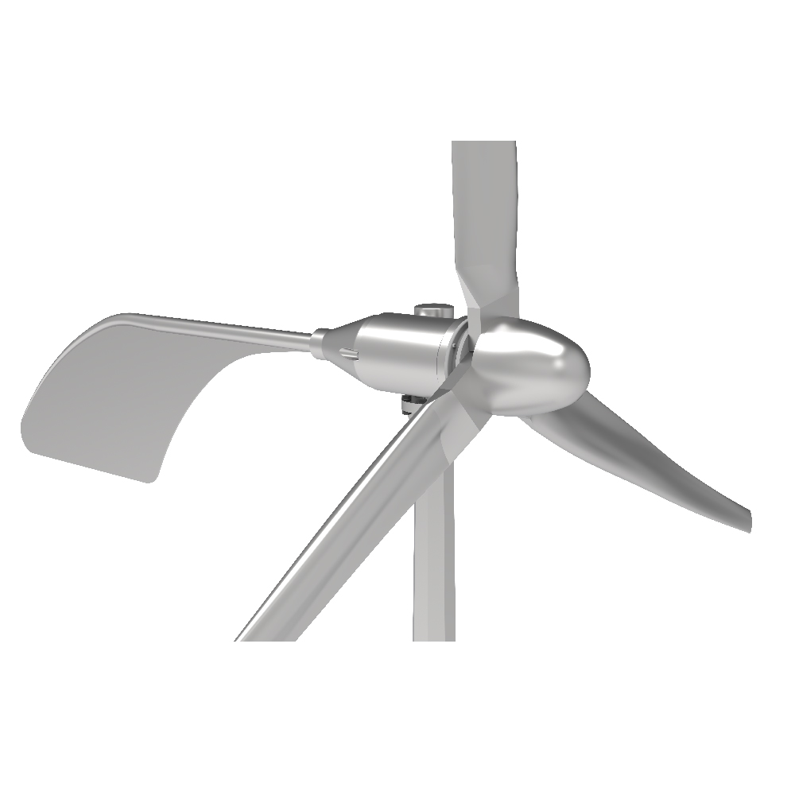

Residential batteries
Residential batteriesReference configuration
5.12 kWh Wall-Mounted LFP Battery
- Battery energy
- 5.12 kWh
- Nominal voltage
- 51.2 V
- Capacity
- 100 Ah
THE PRODUCT PORTFOLIO
Explore the configurations behind a complete power system. Compare equipment formats and reference specifications, then talk to us about the right fit for your project.
Supplier-reference specifications for product selection.
Availability, certificates and warranty confirmed with your quotation.
Showing 22 of 22 configurations
Select up to 3 products to compare.Residential batteries Residential batteries
Residential batteries All-in-one systems
All-in-one systems Commercial cabinets
Commercial cabinets Commercial cabinets
Commercial cabinets Containerized storage
Containerized storage Off-grid inverters
Off-grid inverters Single-phase hybrid
Single-phase hybrid Three-phase hybrid
Three-phase hybrid Commercial hybrid
Commercial hybrid Grid-tied string inverters
Grid-tied string inverters Full-black rooftop modules
Full-black rooftop modules High-output rooftop modules
High-output rooftop modules Bifacial glass-glass modules
Bifacial glass-glass modules Commercial rooftop modules
Commercial rooftop modules High-output bifacial modules
High-output bifacial modules Horizontal-axis turbines
Horizontal-axis turbines Horizontal-axis turbines
Horizontal-axis turbines
Horizontal-axis turbines Pitch-controlled turbines
Pitch-controlled turbines Pitch-controlled turbines
Pitch-controlled turbines Vertical-axis turbines
Vertical-axis turbinesTry a different capacity, power, model or product group.
Product images and technical data are linked to reviewed supplier references. These are selection references, not claims of certified compatibility, current stock or guaranteed performance at every site.